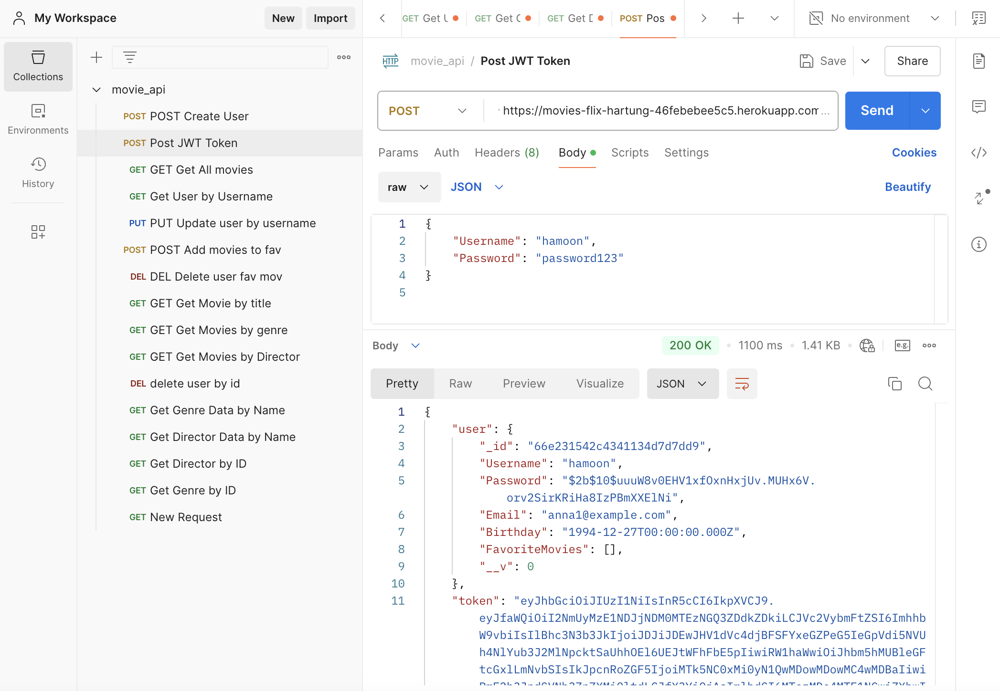

myFlix API - Project Details
Project Description
myFlix API is a backend service created to support the movie-based web application “myFlix.” It offers server-side logic, including a RESTful API for managing movies, users, genres, and directors. The API enables secure user registration, profile management, and data retrieval.
Links
Hosted Version: myFlix API
GitHub Repository: myFlix API GitHub Repository
Technologies Used
- Node.js & Express: For server and API development
- MongoDB & Mongoose: For persistent data storage and modeling
- JWT Authentication: For secure user sessions
- Express-validator & bcrypt: For data validation and password security
- Deployment: Hosted on Heroku
- JSDoc: For generating HTML documentation of the API
Key Materials
- User Stories and Kanban Board: Used to manage user stories and track features like movie management, user authentication, and profile management.
- API Documentation: Created using JSDoc, outlining all available endpoints, parameters, and responses.
Project Highlights
- Movie Management: Retrieve movie lists, details, genres, and directors.
- User Management: Allows users to register, update profiles, and manage favorite movies.
- Secure Authentication: User sessions are secured with JSON Web Tokens, ensuring safe access and data protection.
Screenshot
